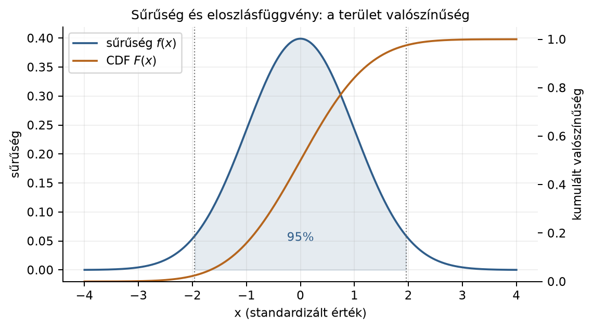

Belépő · szint: közép · idő: 60 perc · eszköz: pandas, matplotlib
Előfeltétel: 13.2. alfejezet · Célkészség: Eloszlás, kapcsolat és csoportkülönbség · Kimenet: működő kód és a labor ellenőrző tesztje.
A Northstar orders.csv táblájában a megfigyelési egység
egy rendelés. Ebben az alfejezetben nem predikciót építünk, hanem leíró
kérdést teszünk fel: milyen alakú a kézbesítési idő eloszlása, milyen
irányú a kapcsolat a távolság és a kézbesítési idő között, és mennyire
térnek el a régiók? A bemenet a tiszta data/orders.csv és
data/customers.csv: az előbbiből a distance_km
(egész, km) és a delivery_days (pozitív egész, nap), az
utóbbiból – a customer_id szerinti kapcsolással – a
region kategória (north, central, south); a régió ugyanis
ügyfélszintű mező, az orders.csv-ben nincs. Kimenetként
három célzott ábrát és egy aggregált, illetve rétegzett korrelációs
táblát készítünk. Az elvárt ellenőrzés: az ECDF az utolsó megfigyelt
értéknél eléri az 1-et, minden korreláció a
intervallumban van, és a rétegzett korrelációk súlyozott átlaga
általában nem egyezik az aggregált korrelációval.
Előzetes becslésem az, hogy a távolság és a kézbesítési idő között
pozitív, de nem determinisztikus kapcsolat látszik, és a régió átlagos
távolsága, illetve késési szintje között is lehet különbség. A
delivery_days utólag ismert mező, ezért a leíró elemzésben
használható, de prediktorba soha nem kerülhet, ha a kérdés a rendelés
pillanatában elérhető becslés.
A hisztogram a numerikus változó értékkészletét intervallumokra, bin-ekre osztja. Ha az intervallumhatárok , akkor a -edik intervallum gyakorisága
ahol
indikátor, azaz 1, ha a feltétel igaz, különben 0. A
density=True normalizálás a gyakoriságot elosztja
-nel
és a binszélességgel, így az oszlopok összterülete 1 lesz, de a tengely
már sűrűség, nem darabszám. A delivery_days egész szám,
ezért a legátláthatóbb választás az egész értékekre központozott, 1 nap
széles bin: a határok például
alakban adják meg, hogy melyik nap hova esik.
A binválasztás nem semleges döntés. A túl széles bin elrejti a részleteket, a túl keskeny bin hamis hézagokat rajzol. Ha valaki „kétmódusú eloszlást” jelent 50 binből, miközben a 10 bines ábra egyetlen módot mutat, akkor a bin, nem az adat tulajdonságát láttatja. Ugyanezért az ábra alá odaírjuk a binszélességet.
Az empirikus eloszlásfüggvény (empirical cumulative distribution function, ECDF) minden értékhez a nála nem nagyobb megfigyelések arányát rendeli:
Ez lépcsős görbe: minden megfigyelt értéknél -nel ugrik feljebb, a lépcső jobbról folytonos. A medián ott van, ahol a görbe eléri vagy átlépi a -öt; az alsó és felső kvartilis a és szintekhez tartozik. Az ECDF előnye, hogy nincs binválasztás, tehát a hisztogram ellenőrző párja lehet.

Az ábra a sűrűség és az eloszlásfüggvény viszonyát mutatja: a sűrűség
értéke önmagában nem valószínűség, csak a görbe alatti terület az. A
jobb tengelyen a CDF fut; a két görbe ugyanazt az eloszlást írja le. A
konklúzió ábra nélkül is megfogalmazható: az ECDF a minta
binválasztástól független összegzése, a sűrűség pedig ennek simított,
modellfüggő változata. A teljes generátor:
lab/figures/make_concept_figures.py
density_cdf(); a reprodukálható mag:
import math
import numpy as np
import matplotlib.pyplot as plt
x = np.linspace(-4, 4, 400)
pdf = np.exp(-0.5 * x**2) / np.sqrt(2 * np.pi)
cdf = 0.5 * (1 + np.vectorize(math.erf)(x / np.sqrt(2)))
fig, ax = plt.subplots(figsize=(6.4, 3.6))
ax.plot(x, pdf, label="sűrűség $f(x)$")
ax.set_xlabel("x (standardizált érték)"); ax.set_ylabel("sűrűség")
ax2 = ax.twinx(); ax2.plot(x, cdf, color="#b5651d")
ax2.set_ylabel("kumulált valószínűség")
ax.fill_between(x, 0, pdf, where=np.abs(x) <= 1.96, alpha=0.12)
ax.legend(loc="upper left"); plt.show()A scatter (szóráskép) minden megfigyelési egységet egy pontként
ábrázol: az
-tengely
a distance_km, az
-tengely
a delivery_days az adott rendelésre. A pontok iránya,
sávszélessége és hajlata mutatja a kapcsolatot. Az azonos koordinátájú
pontok elfedhetik egymást, ezért alpha=0.4 átlátszóságot
vagy egy kis jittert használunk. A scatter a nemlineáris kapcsolatot is
láthatóvá teszi, míg egyetlen korrelációs szám csak a lineáris részt
foglalja össze.
A boxplot a 13.2. alfejezetben megismert ötösszámú összegzést rajzolja meg: doboz a és kvartilisek között, belső vonal a medián, a whisker-ek tipikusan a doboztól távolságig terjednek, az ezen kívüli pontok külön jelöltek. A boxplot ferdeséget és kiugrókat mutat, de nem mutatja a csoport méretét: egy három megfigyelésből álló csoport ugyanolyan széles dobozt kaphat, mint egy háromezres csoport. Ezért a csoportméreteket mindig ráírjuk az ábrára, és a kis csoportból levont következtetést külön megjelöljük.
Két numerikus változó lineáris kapcsolatát a kovariancia irányítja:
ahol és a két mintaátlag. Ha átlag feletti és is átlag feletti, a szorzat pozitív; ha ellentétes irányban térnek el, negatív. A mértékegysége viszont km és nap szorzata, ezért önmagában nem értelmezhető erősségként. A Pearson-korreláció a standardizált eltérések átlagos szorzata:
A számláló és a nevező ugyanazt a dimenziót hordozza, ezért dimenziómentes és -be esik. Az azt jelenti, hogy a pontok egy pozitív meredekségű egyenesen fekszenek; az negatív egyenest jelent. Ha az -nek lineáris függvénye, , akkor . A Pearson-korreláció csak lineáris kapcsolatot mér, és érzékeny a szélsőséges pontokra. Ha csak monotonitásra vagyunk kíváncsiak, a rangokon számolt Spearman-korreláció robusztusabb alternatíva, de ezt itt nem keverjük a Pearson-féle értelmezéssel.
Az aggregált korreláció és a csoporton belüli korrelációk eltérhetnek, ha a csoportképző változó mindkét vizsgált változót eltolja. Tegyük fel, hogy az A csoport adatai párokban , a B csoporté . Mindkét csoportban , mert a pontok tökéletesen csökkenő egyenesen vannak. A hat pont összevonva viszont emelkedő képet mutat, mert a B csoport x- és y-átlaga is magasabb, mint az A-é: az aggregált Pearson-korreláció . Ezt hívjuk Simpson-jelenségnek: a trend iránya megfordulhat, ha a rétegző változót figyelmen kívül hagyjuk.
A Northstar esetében az ilyen eltérés oka lehet, ha az egyik régió egyszerre nagyobb átlagos távolságú és nagyobb átlagos késésű, miközben a régión belül a távolság és késés kapcsolata gyenge. Ez nem ok-okozati bizonyíték; csak arra figyelmeztet, hogy a rétegzett elemzés más kérdésre válaszol, mint az aggregált.
A Simpson-jelenség bináris változókkal is megmutatható. Két réteg, és , rétegenként 20 megfigyelés:
| Réteg | Kontroll | Kontroll | Treatment | Treatment | Különbség |
|---|---|---|---|---|---|
| 10 | 0 | 0 | 10 | ||
| 0 | 10 | 10 | 0 |
Az összevont arány kontrollban , treatmentben , a különbség . Rétegenként viszont , illetve . Az összevont nulla nem „nincs hatás”, hanem két ellentétes hatás kioltása; a rétegző változó nélkül a hatás láthatatlan. Fordítva is igaz: egy összevont pozitív különbség állhat abból, hogy a treatment túlnyomórészt a magasabb alaparányú rétegbe került.
COUNTS = {("Z0", 0, 0): 10, ("Z0", 1, 1): 10,
("Z1", 0, 1): 10, ("Z1", 1, 0): 10}
def rate(stratum, treatment):
rows = [(y, n) for (z, t, y), n in COUNTS.items() if z == stratum and t == treatment]
return sum(y * n for y, n in rows) / sum(n for _, n in rows)
for stratum in ("Z0", "Z1"):
print(stratum, rate(stratum, 0), rate(stratum, 1), rate(stratum, 1) - rate(stratum, 0))
def overall(treatment):
rows = [(y, n) for (_, t, y), n in COUNTS.items() if t == treatment]
return sum(y * n for y, n in rows) / sum(n for _, n in rows)
print("overall", overall(0), overall(1), overall(1) - overall(0))A lab/causal_counterexample.py rate(),
overall() és report() függvényei ezt a táblát
adják; a tests/test_causal_counterexample.py a rétegenkénti
,
az összevont
és a két arány
értékét ellenőrzi. Az oksági olvasathoz rétegzés, randomizáció vagy
explicit azonosítás kell; a nyers összevont különbség önmagában nem
az.
Először kézi ellenőrzést végzünk. Legyen öt rendelés
distance_km értéke
és a hozzájuk tartozó delivery_days
A mintaátlagok km és nap. Az eltérések szorzatösszege , az -eltérések négyzetösszege , az -eltéréseké . Így
Ez erős pozitív lineáris kapcsolatot jelez ezen az öt ponton. Az ellenőrző tulajdonság, hogy a dimenziómentes standardizálás miatt nem változik, ha a távolságot mérföldre váltjuk, mert az -értékek közös pozitív számmal való szorzása a számlálót és a nevezőt ugyanazzal a konstanssal szorozza.
A laboradat három célzott ábráját az alábbi script készíti el. A kód
a lab projekt gyökeréből futtatandó, ahol a pyproject.toml
és a data/ mappa található. A korábbi környezetfejezetekben
beállított uv-projektet használjuk; a szkript csak az alapkörnyezet
csomagjait (NumPy, pandas, Matplotlib) igényli:
# a lab/ munkakönyvtárból, ahol a pyproject.toml és a data/ mappa van
uv run python s051_eda.py# s051_eda.py
# Leíró elemzés: eloszlás, kapcsolat, csoportkülönbség
import numpy as np
import pandas as pd
import matplotlib
matplotlib.use("Agg")
import matplotlib.pyplot as plt
from pathlib import Path
def pearson_manual(x, y):
"""Pearson-korreláció a képletből, explicit centírozással."""
x = np.asarray(x, dtype=float)
y = np.asarray(y, dtype=float)
xd = x - x.mean()
yd = y - y.mean()
return float((xd * yd).sum() / np.sqrt((xd ** 2).sum() * (yd ** 2).sum()))
# --- Kézi kontroll, nincs szükség a laborfájlra ---
demo_x = np.array([5.0, 10.0, 15.0, 20.0, 25.0])
demo_y = np.array([2.0, 3.0, 3.0, 4.0, 5.0])
demo_r = pearson_manual(demo_x, demo_y)
print(f"Kezi Pearson r: {demo_r:.4f}")
assert np.isclose(demo_r, 0.9707, atol=0.0001)
# --- Northstar orders betöltése; a régió az ügyféltáblából jön ---
orders = pd.read_csv(
"data/orders.csv",
parse_dates=["order_ts"],
usecols=[
"order_id", "customer_id", "order_ts", "distance_km",
"delivery_days", "priority_flag",
],
)
customers = pd.read_csv("data/customers.csv",
usecols=["customer_id", "region"])
orders = orders.merge(customers, on="customer_id", how="left",
validate="many_to_one") # join-védelem (s026)
assert len(orders) == 2400
eda = orders.dropna(subset=["distance_km", "delivery_days"])
print("shape:", eda.shape)
print("dtypes:")
print(eda[["distance_km", "delivery_days", "region"]].dtypes)
out_dir = Path("figures_s051")
out_dir.mkdir(exist_ok=True)
# --- 1. ábra: hisztogram + ECDF ---
fig, (ax_hist, ax_ecdf) = plt.subplots(1, 2, figsize=(11, 4))
bins = np.arange(eda["delivery_days"].min() - 0.5,
eda["delivery_days"].max() + 1.5, 1.0)
ax_hist.hist(eda["delivery_days"], bins=bins, color="#4C72B0",
edgecolor="white")
ax_hist.set_xlabel("delivery_days (nap)")
ax_hist.set_ylabel("darabszám")
ax_hist.set_title("Hisztogram, 1 napos bin")
sorted_days = np.sort(eda["delivery_days"].to_numpy())
ecdf_y = np.arange(1, len(sorted_days) + 1) / len(sorted_days)
ax_ecdf.step(np.r_[sorted_days[0] - 1, sorted_days],
np.r_[0.0, ecdf_y], where="post", color="#C44E52")
ax_ecdf.axhline(0.5, color="gray", linewidth=0.6, linestyle="--")
ax_ecdf.set_xlabel("delivery_days (nap)")
ax_ecdf.set_ylabel("F_n(x)")
ax_ecdf.set_title("ECDF, binválasztástól független")
fig.tight_layout()
fig.savefig(out_dir / "delivery_days_distribution.png", dpi=150)
plt.close(fig)
assert np.isclose(ecdf_y[-1], 1.0)
# --- 2. ábra: scatter rétegző színnel ---
fig, ax = plt.subplots(figsize=(7, 5))
for region, d in eda.groupby("region"):
ax.scatter(d["distance_km"], d["delivery_days"], alpha=0.4, s=12,
label=region)
ax.legend(title="region")
ax.set_xlabel("distance_km (km)")
ax.set_ylabel("delivery_days (nap)")
ax.set_title("Kézbesítési idő a távolság függvényében, régiónként")
fig.tight_layout()
fig.savefig(out_dir / "distance_vs_delivery_scatter.png", dpi=150)
plt.close(fig)
# --- 3. ábra: boxplot + csoportméret ---
region_order = ["north", "central", "south"]
fig, ax = plt.subplots(figsize=(7, 5))
ax.boxplot([eda.loc[eda["region"] == r, "delivery_days"] for r in region_order],
whis=1.5)
ax.set_xticks([1, 2, 3], region_order)
counts = eda["region"].value_counts().reindex(region_order)
assert counts.sum() == len(eda)
for i, region in enumerate(region_order, start=1):
ax.text(i, ax.get_ylim()[1] * 0.98, f"n={counts[region]}",
ha="center", va="top", fontsize=9)
ax.set_xlabel("region")
ax.set_ylabel("delivery_days (nap)")
ax.set_title("Kézbesítési idő csoportonként, csoportmérettel")
fig.tight_layout()
fig.savefig(out_dir / "delivery_days_by_region_boxplot.png", dpi=150)
plt.close(fig)
# --- Aggregált és rétegzett korreláció ---
r_all = pearson_manual(eda["distance_km"], eda["delivery_days"])
print(f"Aggregalt Pearson r: {r_all:+.3f}")
for region, d in eda.groupby("region"):
r_group = pearson_manual(d["distance_km"], d["delivery_days"])
print(f"{region:<8} n={len(d):4d} atlag_tav={d['distance_km'].mean():6.2f} km "
f" atlag_keses={d['delivery_days'].mean():5.2f} nap r={r_group:+.3f}")A csoportátlagok kiírása azért fontos, mert a Simpson-jelenséget nem a rétegzett -ek önmagukban, hanem a csoportok közötti átlageltolódásokkal együtt lehet értelmezni: ha az egyik régió átlagos távolsága és átlagos késése is magas, az aggregált a csoportok közötti eltolódást is tükrözi.
A kézi kontroll
pontosan egyezik a levezetéssel. A labor futtatása során a script a
figures_s051/ mappába írja a három PNG-t, és kiírja az
aggregált, illetve régiós korrelációkat. A számokat a lab adatán
futtattuk (pandas 2.2.3, NumPy 2.2.6; a kiírás kismértékben verziófüggő
lehet):
shape: (2400, 7)
Aggregalt Pearson r: +0.772
central n= 817 atlag_tav=910.79 km atlag_keses= 5.23 nap r=+0.757
north n= 773 atlag_tav=946.48 km atlag_keses= 5.36 nap r=+0.781
south n= 810 atlag_tav=897.64 km atlag_keses= 5.12 nap r=+0.777A delivery_days 1 és 13 nap között van, a módusz 5 nap
(348 rendelés), az eloszlás enyhén jobbra ferde. A rétegzett és az
aggregált
gyakorlatilag azonos, a régiók átlagos távolsága és késése alig tér el:
ezen az adaton a régió nem keverő változó, Simpson-jelenség nem lép fel.
Az invariáns ellenőrzések a kódban futnak: az ECDF utolsó értéke 1, a
csoportméretek összege a teljes sorok száma, és a Pearson-függvény
minden hívása a
tartományban marad. A dropna utáni sorok számát is kiírjuk,
hogy egy esetleges szándékosan sérült bemenet ne csendben torzítsa az
ábrákat. Az ábrákat úgy érdemes olvasni, hogy a hisztogram módusza és
ferdesége a tipikus késést, az ECDF pedig a kvantiliseket adja binfüggés
nélkül; a scatter a régiók szerinti színnel a rétegzett kapcsolatot
mutatja; a boxplot a mediánok és a szóródás összevetését adja a
csoportméretek ismeretében.
A korreláció csoportonkénti és összesített értéke közötti eltérés lehet összetételhatás; a Pearson-korreláció aggregálása nem egyszerű súlyozott átlagolás. A Simpson-jelenség példájában válasszuk külön a csoporton belüli és a csoportok közötti összefüggést.
Értelmezés. A scatter pozitív irányt mutat
distance_km és delivery_days között. Fogalmazd
meg, miért nem jelenti ez automatikusan azt, hogy a nagyobb távolság
okozza a késést, és adj egy lehetséges alternatív magyarázatot a
régiókkal kapcsolatban.
Megvalósítás. A kézi ötelemű példából
(x=(5,10,15,20,25), y=(2,3,3,4,5)) készíts
ECDF-et. Add meg lépésenként a rendezett y-értékeket, a hozzájuk tartozó
értékeket, és olvasd le a mediánt.
Hibakeresés. Egy kolléga a region
és delivery_days kapcsolatát
plt.scatter(eda["region"], eda["delivery_days"]) parancssal
ábrázolja. Mi a hiba? Melyik ábratípus alkalmasabb erre a változópárra,
és mit veszítenénk, ha a boxploton a csoportméreteket nem tüntetjük
fel?
Megváltozott feltétel. Készíts másolatot az
eda tábláról, amelyben a north régió minden
delivery_days értékéhez hozzáadsz 3 napot. Számítsd ki újra
az aggregált és a régiós Pearson-korrelációkat. Melyik értéknek kell a
lebegőpontos tolerancián belül változatlannak maradnia, és
miért?
1. A korreláció együttmozgást mér, nem beavatkozást.
A nagyobb távolság növelheti a késést, de a region
mindkettővel összefügghet: ha például a north régió
jellemzően nagyobb távolságú rendeléseket és nagyobb átlagos késést is
tartalmaz, akkor a régió keverő változó lehet. Ekkor az aggregált
pozitív
részben a régiók közötti eltolódásból fakad, nem a távolság rendelésen
belüli hatásából. A rétegzett scatter és a csoportonkénti
segít elkülöníteni ezt a két kérdést. A laboradaton ez a magyarázat
gyenge: az aggregált
,
a régiónkénti
–,
és a régiók átlagai alig térnek el, tehát a régió itt nem magyarázza a
kapcsolatot; Simpson-hatás csak olyan (hipotetikus) adaton fordulna elő,
ahol a régiók távolság- és késésátlaga erősen eltér, ahogy a szintetikus
példa mutatja. Oksági állításhoz randomizált kísérlet vagy explicit
oksági azonosítás kell; a korrelációs ábra csak a következő vizsgálat
kiindulópontja.
2. A rendezett y-értékek . Az ECDF a jobbról folytonos lépcsővel:
| x | F_n(x) |
|---|---|
| 2 | 1/5 = 0.20 |
| 3 | 3/5 = 0.60 |
| 4 | 4/5 = 0.80 |
| 5 | 5/5 = 1.00 |
A medián az a legkisebb érték, ahol , tehát 3 nap. Ellenőrzés: a rendezett minta középső eleme a harmadik, ami 3.
3. A scatter két numerikus tengelyt vár, de a
region kategória. A kategorikus értékeket a scatter
önkényes sorrendben helyezné a vízszintes tengelyre, ami hamis folytonos
kapcsolatot sugallna. Kategorikus csoportosítóhoz a boxplot vagy viola
plot alkalmas. Ha a csoportméreteket nem írjuk ki, egy 3 elemű régió
ugyanúgy néz ki, mint egy 900 elemű, ezért tévesen adhatunk azonos súlyt
a kis mintájú csoport ingadozásának. A csoportméretet mindig fel kell
tüntetni.
4. Mindhárom régión belüli Pearson-korrelációnak
változatlannak kell maradnia: a north csoportban azért,
mert
,
a konstans
a centírozás során kiesik; a central és a
south csoportban pedig azért, mert az adatukhoz nem
nyúltunk. Numerikusan
np.isclose(r_north_old, r_north_new, atol=1e-12)
ellenőrzést várunk. Az aggregált
viszont változik (a laboradaton
-ről
-re
csökken, a north
marad), mert a
napos eltolás csak az egyik keverékkomponenst mozgatja, így a régiók
közötti eltolódás és a teljes mintabeli kovariancia szerkezete módosul.
Ez a feladat éppen a standardizálás 10.1.
alfejezetben bevezetett, eltolás- és skálainvarianciáját és a
keverék eloszlások érzékenységét köti össze.
A leggyakoribb tévedés, hogy a korreláció ok-okozati hatásként
jelenik meg. A fenti Simpson-példa az ellenpélda: az A és B csoportban
,
az összevont hat ponton
.
Ugyanazokat a pontokat nézve a „hatás” iránya az összevonástól függ —
ezért a korreláció predikciós együttmozgást ír le, nem beavatkozási
hatást. A második gyakori tévedés a hisztogram alakjának túlértelmezése.
Ugyanaz a delivery_days minta széles binnel egyetlen módust
mutathat, keskeny binnel pedig több különálló csúcsot; a módusz és a
„módok száma” nem adatjellemző, hanem binválasztás függvénye is. Az
ECDF, a kvantilisek és a medián binfüggetlen kontrollt adnak.
Önellenőrzés: meg tudnám-e mondani egy boxplotról, hogy a mögötte álló
csoport 10 vagy 1000 elemű? Meg tudnám-e mondani, hogy egy aggregált
mögött mennyi rétegen belüli, ellentétes irányú kapcsolat van? Ha a
válasz nem, kiegészítő ábra vagy táblázat kell.
A hisztogram a binválasztás függvényében mutatja az alakot, ezért az ECDF binfüggetlen kvantilisellenőrzést ad. A scatter megfigyelési egységenként ábrázolja két numerikus változó kapcsolatát, a boxplot kategorikus csoportok között veti össze a mediánt, kvartiliseket és kiugrókat, de a csoportméretet külön fel kell tüntetni. A Pearson-korreláció a standardizált eltérések átlagos szorzata, dimenziómentes, és csak lineáris kapcsolatot mér. A Simpson-jelenség azt mutatja, hogy az aggregált és a rétegzett korreláció iránya eltérhet, ha a rétegző változó mindkét tengelyt eltolja. A Northstar-labor három ábrája és a régiós korrelációs tábla ezt a megkülönböztetést gyakorolja. A következő 13.4. alfejezet a hiányzó értékek és anomáliák vizsgálatát kapcsolja ehhez a szemlélethez.